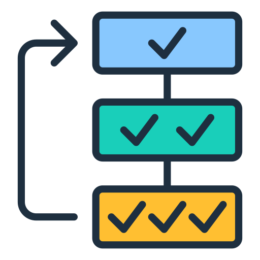
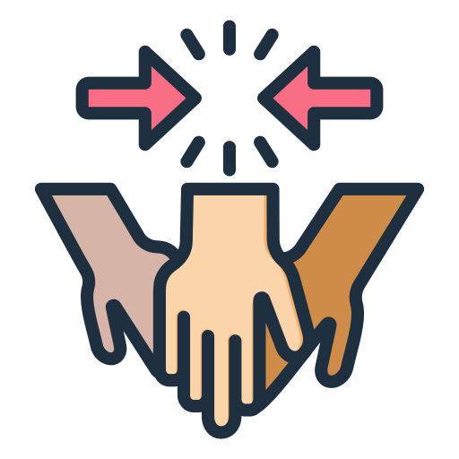
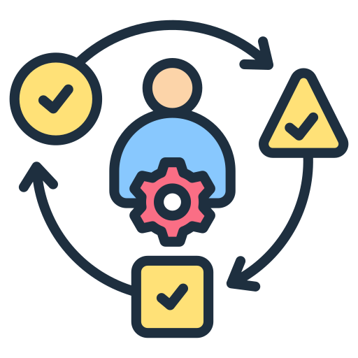
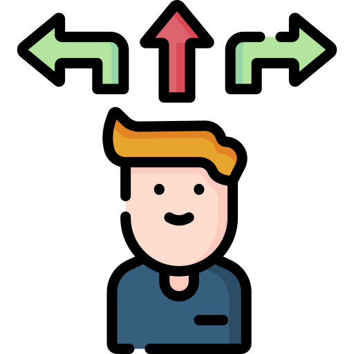
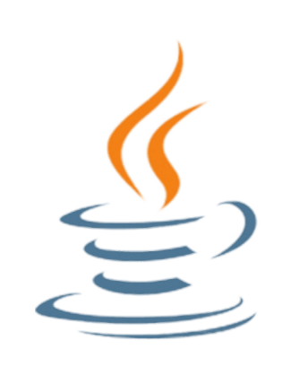
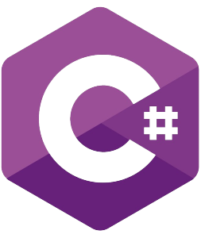
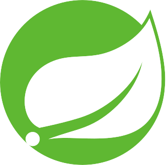
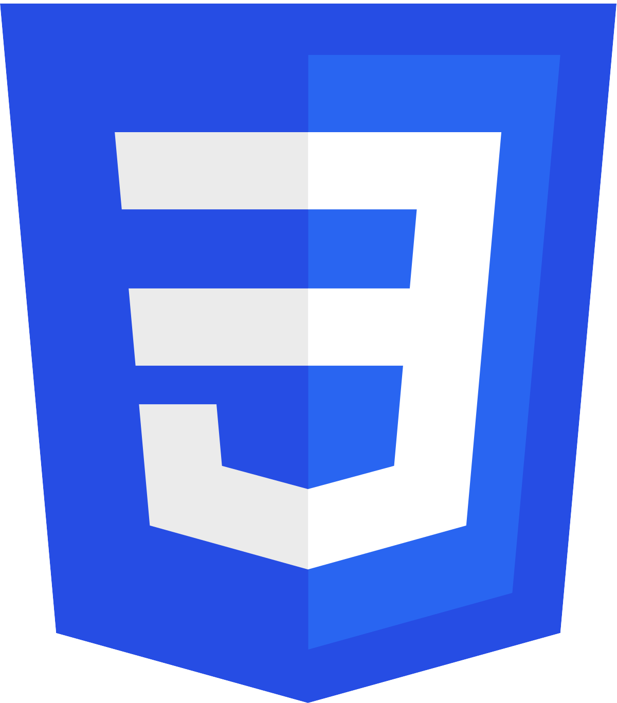
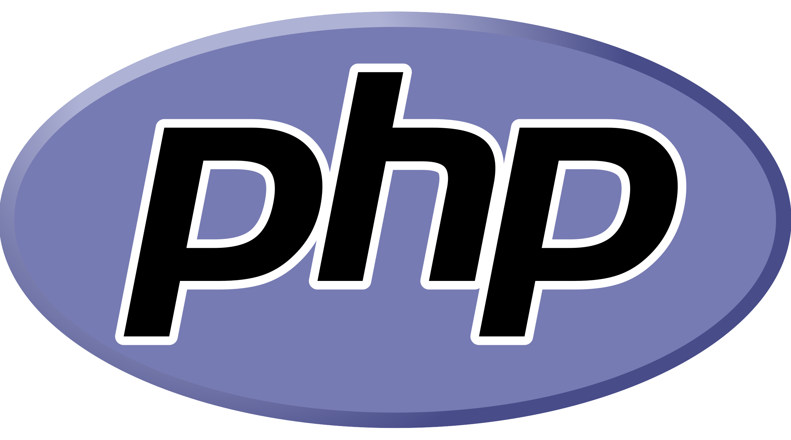
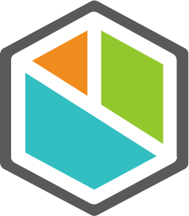

Habilidades
Durante mi formación como ingeniero informático he adquirido diferentes aptitudes y conocimientos muy valiosos en el mundo de la informática.
Aptitudes
Algunas de las aptitudes fundamentales que he desarrollado durante el grado han sido:
Autoaprendizaje

Comunicación
Liderazgo

Organización

Trabajo en Equipo
Otras aptitudes fundamentales adquiridas durante la carrera y, también, como monitor y juez árbitro de pádel son:

Adaptabilidad

Ética
Iniciativa
Responsabilidad

Toma de Decisiones
Conocimientos
Las tecnologías que más conozco y más he usado a lo largo del grado han sido:
LENGUAJES DE PROGRAMACIÓN

Java
 Python
Python
 C++
C++

C#
 VB
VB
 R
R
 MATLAB
MATLAB
FRAMEWORKS
 Angular
Angular
 WPF
WPF

Spring
 Bootstrap
Bootstrap
 .NET
.NET
ENTORNOS DE DESARROLLO
Eclipse
 Visual Studio
Visual Studio
 Visual Studio Code
Visual Studio Code
DESARROLLO WEB
HTML

CSS
JS

PHP
OTRAS TECNOLOGÍAS

Bizagi
 MySQL
MySQL
 Git
Git
 Cisco PT
Cisco PT